手机改造成web服务器计划
手机改造成web服务器计划
前言
很久以前也算是个刷机狂魔了，大概是小学四五年级的时候吧，手里出现了智能手机，机缘巧合了解到 root ，虽然那时咱连怎么读都不知道，但还是被激起了强烈的兴趣。那个时候网上各种各样的刷机软件可以说是百花齐放了，用过非常多的 root 工具。后来因为“救砖难”而“手机贵”，很久也没在刷过机。
最近因为深度建站，深深感受到这些网络服务的昂贵，甚至连最基本的 Web服务器 都不是普通零花钱可以支持的。虽然有免费建站方案，但体验确实一般。所以，便萌生了一个奇怪的想法：把我的旧手机改造成一个服务器！（虽然但是，就算改造出来怕是也没有免费方案好用，不过，不重要了，整活才是最快乐的！）
解BL锁
一开始便遇到了困难，没想到，这才几年，刷机貌似像是上个世纪的事，不仅工具少之又少，还要先解开手机产商给加的 BL锁 。什么是 BL锁 呢？
BL锁，是 BootLoader 的简称，就是在操作系统内核运行之前运行的一段小程序。在嵌入式操作系统中，BootLoader 是在操作系统内核运行之前运行。可以初始化硬件设备、建立内存空间映射图，从而将系统的软硬件环境带到一个合适状态，以便为最终调用操作系统内核准备好正确的环境。
在解开BL锁之前，用户是无法自由进行刷机操作和ROOT操作的。部分手机官方为了保证手机的安全，为手机设置了BL锁，在BL锁未解的情况下，用户是不能自行刷机或获取ROOT权限的。
—— 百度百科
百度一圈后发现 BL锁 的解锁码是可以通过官方申请得到的，但是这已经是以前的事情，华为早已经关闭解锁码申请通道了 ~ 网上有不少跳过申请解锁码刷机的方案，但试过一圈之后基本都失败了。
最终还是决定去酷安逛逛，发现了一个正在为网友们免费解华为 BL锁 的大佬 @某贼 。我便跟着研究了一下，大佬的所有步骤都是公开的，而且免费为大家远程读码，为大佬的互联网共享精神鼓掌！
因为我的机型可以直接使用 HCU client （付费软件）获取解锁码，所以直接使用 USB端口逆向工具 让大佬远程帮我获取了。（再次感谢无偿为大家远程读码的 @某贼 大佬）
我的设备参数：
手机型号：华为荣耀6X（BLN-AL10）
芯片型号：Kirin 655
安卓版本：7.0
UI版本号：5.0.2
本来为 EMUI8，担心版本过高影响解码，毕竟咱也不能浪费别人时间嘛，特意先通过华为手机助手(Hisuite)降级了——新版本的 Hisuite 貌似不支持系统回退，这里用的是 10.0.0.510 版本，在系统更新界面选择其他系统。
在完成本计划的中途，我也完成了另一部备用机（Red M i K30）的解锁加 ROOT ，不得不吐槽一句，安卓最大的特点就是开源，有很多安卓用户都热爱于安卓极高的可定制性与可玩性，也许厂商是站在安全考虑，但我仍然质疑厂商无限打压用户 ROOT 的行为。而起码在这点上，小米仍然官方开放用户解锁并自带 ROOT 管理，我认为这才是开源该有的样子。
ROOT
记得以前经常用 ROOT精灵，KingROOT等工具直接在手机就可以很方便地获取 ROOT权限。让我震惊的是，即使现在的环境，还有不少这类软件存活且保持更新，但是貌似基本都是山寨版的。尝试了很多软件之后，基本都无法完成 ROOT ，许多甚至就是杀毒软件套壳。当然也有极少数风评不错且被广泛证明依然有用的工具，比如 YoRoot ，并且官方支持机型就包括荣耀6X ，正是我需要的！
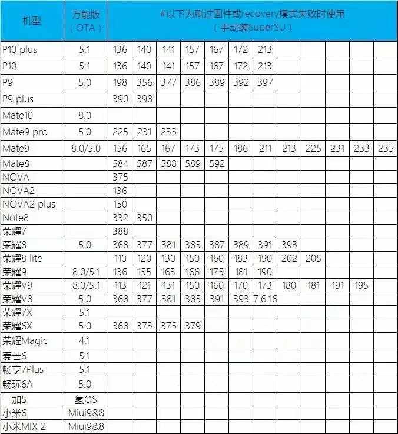中间有个小插曲，因为临时的软件需求，我又通过系统更新将原先降级的 EMUI5 更新到了 EMUI8 。本以为再次用手机助手回退即可，然而并不支持对解锁手机的回退，无论通过官方还是第三方工具，系统安装的进度条总能完整走完，但手机重启却依然是 EMUI8 。在此期间我也找了很多适配 荣耀6X 的 ROM 包，用于后续刷机。
不知道是否因为系统更新了的原因，实测我的手机并不能通过 YoRoot 来获取 ROOT 权限。因为没有 ROOT 权限很多其他回退操作无法执行，因此，还是得自己慢慢动手。
根据小米刷机成功的经验，只需要下载系统卡刷ROM，取出压缩包中的 boot.img 文件，然后在手机中安装面具（magisk），用面具修改 boot.img 文件，再用电脑给手机刷入 TWRP 重启进入并选择安装 boot.img 到 boot 分区，然后重启即可。
TWRP ：Team Win Recovery Project，是一款易于使用和可以自定义的Recovery。
ROM包准备了不少，先找个适配的 TWRP ，百度上有一键刷入的，也有单个包的，但是无论换多少个，刷入手机的过程都会有以下报错。
1 | Writing 'recovery' FAILED (remote: 'partition length get error') |
而如果无视直接进入 TWRP 的话，则会显示错误并提示升级系统（依然很有可能是我私自升级系统的原因），毕竟 TWRP 根本没刷进去，可以理解。由于成功以后就没复现这个错误了，因此不放图。
习惯了百度直接搜索，我过了很久才意识到 TWRP 是有 官网 的，而且提供各种版本下载，并且还找得到我的机型，只不过，实践证明，依然无法正常刷入。
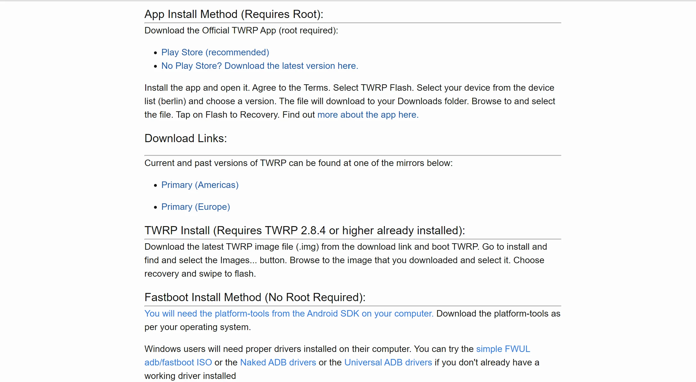所以，还是对症下药，朝着问题去解决吧。对于 Command not allowed 这个问题，Get Droid Tips 上有比较详细的解决方案。通过 Treble Check 这个软件了解到荣耀6X 是仅A分区的，因此应在命令行输入以下代码刷入。
1 | fastboot flash recovery twrp.img |
这个网站也提供了ADB 和 Fastboot 的下载安装，里面的教程解决方案都非常详细周到，但是还是没有解决我的问题，因为还有一个 partition length get error 依然没找到解决方案。
最终在 XDA开发者论坛 中找到了一份华为P8的刷机指南，而我完全符合其中的问题二。
1 | fastboot flash recovery_ramdisk RECOVERY-V2.img |
按照指示刷入作者分享的包后，我才终于在这部手机上看到 TWRP 的界面。
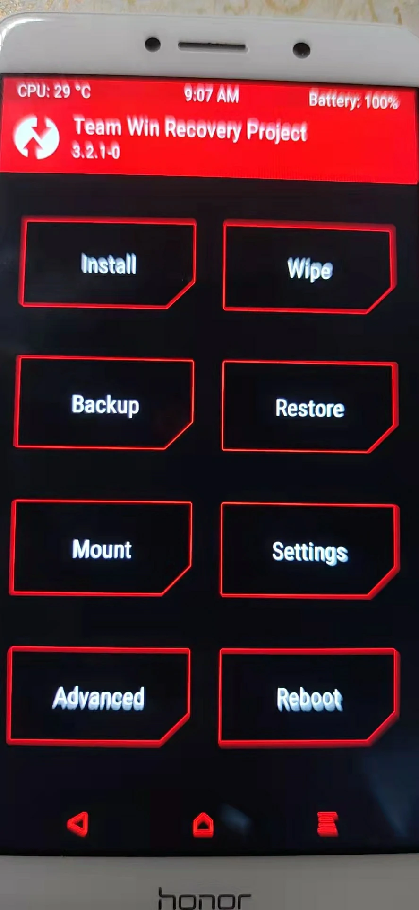在这里也分享一下我能成功刷入的唯一包的 下载地址。
接下来就应该刷包了，我提取了 boot.img 并经过面具修改，很快便进入 TWRP 准备安装后成功获取权限了，然而这个 TWRP 根本无法读取手机内存，也就是不能通过手机端直接安装了。于是我临时改为用电脑端命令来刷入，这里参考了 @某贼 分享的华为刷机教程，直接用他提供的命令加上我用面具修改后的 boot.img 执行刷机，然后…
显然，需要一个 ZIP 文件，而不是我的 boot.img 。然后我才发现 @某贼 的教程中其实提供了一个刷机包，
于是我再次在电脑中输入以下代码，稍微修改了一下文件名。
1 | adb sideload Magisk-20.4(20407).zip |
失败次数过于多，因此即使在大佬教程的加持下，还是非常紧张，小心翼翼按下回车键后，最终：
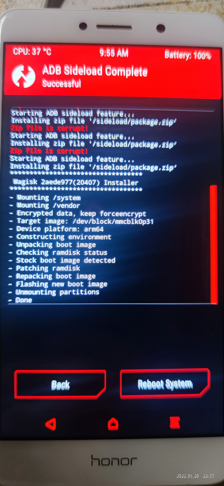还剩最后一步，开机可能会跳出面具的安装，不过我并没有跳出来，可能是装了更新版本的缘故，因为得保持 20.4 版本的面具，还是从刷机包中提取了原来就提供了的 magisk.apk 。
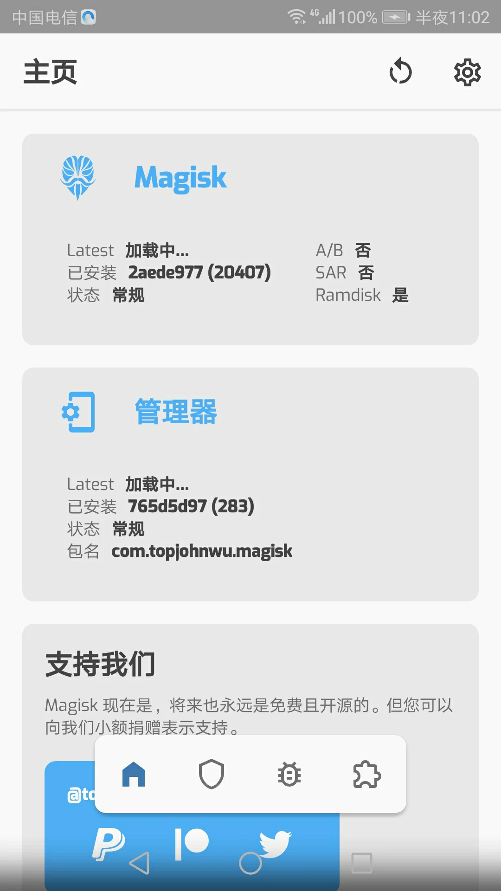到这里，手机就算是正式完成了 ROOT 权限的获取。理论上到这里就可以安装软件成为服务器了，但是我要再深入改造一下，刷入类原生系统，以后有机会直接刷入 Linux 。
刷类原生系统
适配 荣耀6X 的类原生系统并不多，我选了 魔趣 ROM ，直接在官网的Flash MoKee（刷机工具） 界面即可刷入。然而…
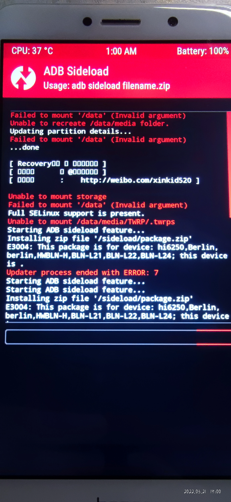上回书说到，这部手机怎么都刷不进 TWRP ，最后是在 XDA开发者论坛 中找到了一份华为P8的刷机指南，而我完全符合其中的问题二，才通过刷入作者所给的 TWRP 包才能成功。也就是说，这份唯一可行的包是适配华为P9 的，因此在 TWRP 下手机的型号将显示为华为P9 。
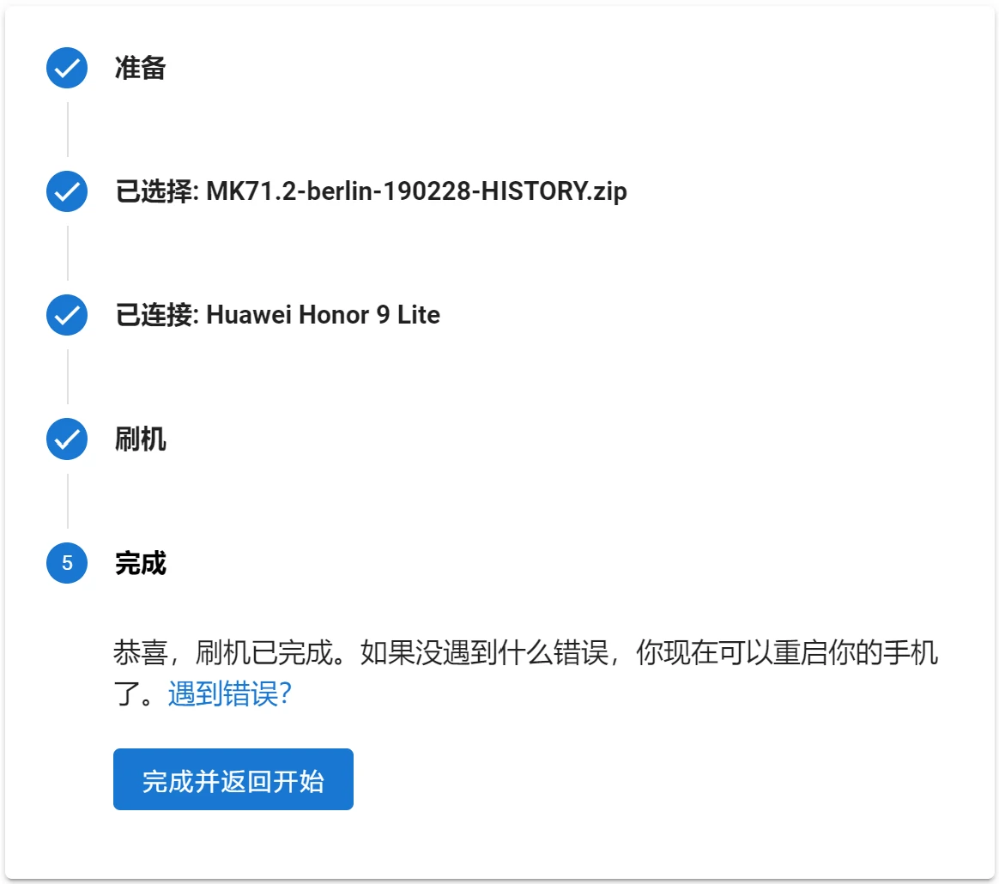显然，在这种情况下是无法完成刷机的，并且实践证明完全不可行。
那么有没有一种可能，修改 ROM包的适配机型，这样就不会在开头检查的时候就报错了。负责定义适配机型的文件是位于压缩包中 \META-INF\com\google\android\ 下的 updater-script 文件。我们应该删除或者修改 assert 的每一行，在这个文件中只有第一行需要修改，于是我将整行删除。
1 | assert(getprop("ro.product.device") == "hi6250" || getprop("ro.build.product") == "hi6250" || getprop("ro.product.device") == "Berlin" || getprop("ro.build.product") == "Berlin" || getprop("ro.product.device") == "berlin" || getprop("ro.build.product") == "berlin" || getprop("ro.product.device") == "HWBLN-H" || getprop("ro.build.product") == "HWBLN-H" || getprop("ro.product.device") == "BLN-L21" || getprop("ro.build.product") == "BLN-L21" || getprop("ro.product.device") == "BLN-L22" || getprop("ro.build.product") == "BLN-L22" || getprop("ro.product.device") == "BLN-L24" || getprop("ro.build.product") == "BLN-L24" || abort("E3004: This package is for device: hi6250,Berlin,berlin,HWBLN-H,BLN-L21,BLN-L22,BLN-L24; this device is " + getprop("ro.product.device") + ".");); |
接着重新刷入 ROM包，果然正式开始刷入了，确实也应该如此。
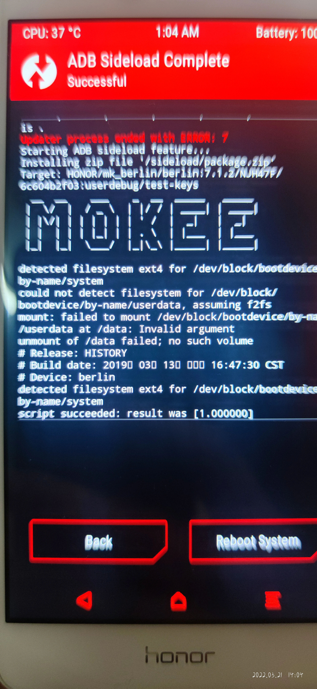等待刷入完成，重启手机，华为从不让我失望，熟悉的蓝色屏幕照常亮起，是快乐的 honor 。然后，便无法进入然后了，系统开始无穷无尽的重启，失败，重启，失败。最后，还是先通过自带的 eRecovery 重装回了 EMUI8 。
然而， eRecovery 的重装也依然无法进入系统，即使进行用户级恢复出厂设置也无济于事。不过，继续通过 eRecovery 进行工厂级恢复出厂设置顺便清理cache ，再次重启便顺利进入了 EMUI8 。兜兜转转回到了 ROOT 之前的样子，不知为何，有点欣慰。
熟练地获取 ROOT 权限，问题不大，继续！再从 ROM包上思考问题就有点不现实了，毕竟主要问题还是 TWRP 的版本不对，再深入修改 ROM包还不如干脆直接刷安卓原生系统。因为那篇华为P9 的教程并没有说明 TWRP 的来历，想找到适配荣耀6X 的同款 TWRP 属实是有点困难，于是我还是想到了 TWRP 官网 ，记得里面有一条特殊的说明，推荐在获取 ROOT 权限的条件下使用官方应用刷入。在之前刷包时是为了 ROOT ，所以这条说明的存在就有点尴尬，都 ROOT 了为什么还需要刷 TWRP ，然而现在，他却给出了一个大大的希望。
思路还不错，过程也非常顺利，但是结果却依然不尽如人意，依然还是老问题。不过难得的希望怎么能就这么放过呢，我还是决定再刷几个其他版本的 TWRP ，也许是版本的问题，毕竟手机这么老了。测试最新的几个版本还是老问题，还是从能下载的最旧的一个版本开始测试，结果…
我是万万没想到这也能让系统崩溃，刷入过程一切顺利，重启的时候发现，不仅进不去 TWRP ，系统也进不去了。没办法，从头开始吧，再次 eRecovery 重装并恢复出厂设置，重新 ROOT ，准备跟剩下的版本继续死磕到底。
但是，再次成功进入那版 TWRP 时，我注意到，作者名不是写在这里吗。
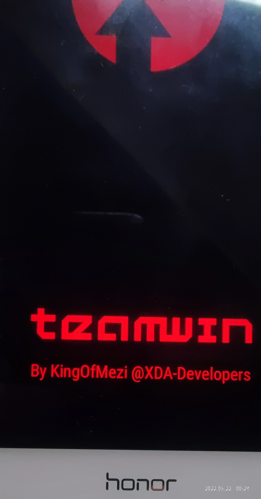那还死磕什么，直接上 XDA论坛 寻找作者，说不定就有现成的适配 TWRP 的同款包，非常荣幸的是，不仅成功找到了作者，也在他的 一篇文章 中找到了适配于荣耀6x 的 KingOfMezi 版的 TWRP 。
于是我又再次刷 TWRP ，获取 ROOT 权限，然后，进魔趣的 Flash MoKee（刷机工具） 界面再次尝试刷 ROM 。
并不知道什么原因，这次，却无法连接手机了……并且，电脑端显示的依然是华为9 。也就是说，即使从作者那里下的 TWRP 依然不起作用，现在，问题应该出在哪里呢。
还是刷一个 EMUI8 测试一下，结果这个依然没有成功，但是，再次进入 TWRP 却进不去了。进入 FASTBOOT 发现，竟然给我的手机重新上锁了。甚至，连自带的 eRecovery 都进不去。
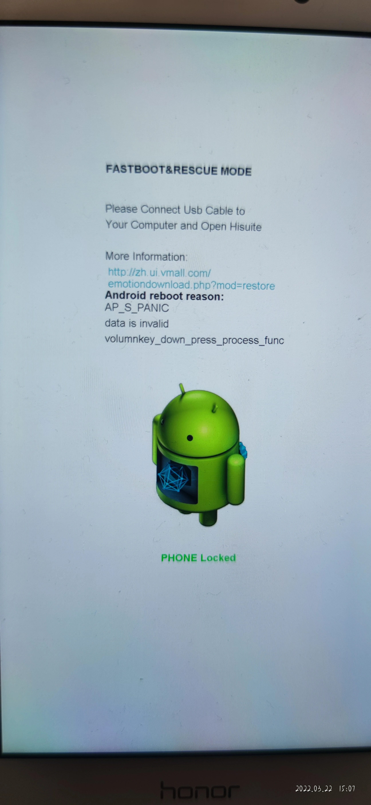既然上锁了，而且也无法 eRecovery 修复，便想起来 Hisuite 有一个系统修复功能，而且是支持荣耀6X 的，现在是时候发挥它的价值了。
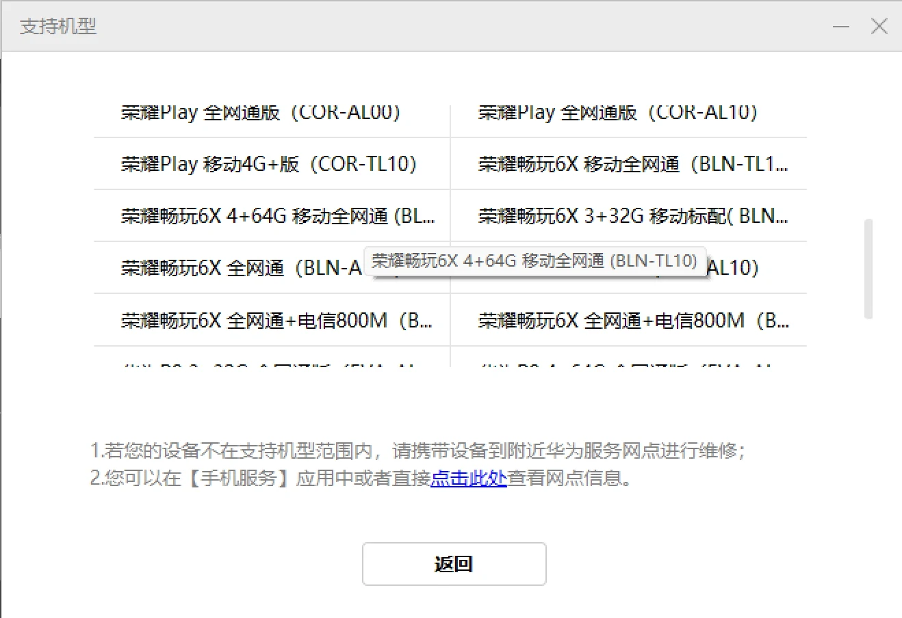虽然官方直白地将手机型号标在这里，但是显然他错误方式更直白，还直接去网点解决。
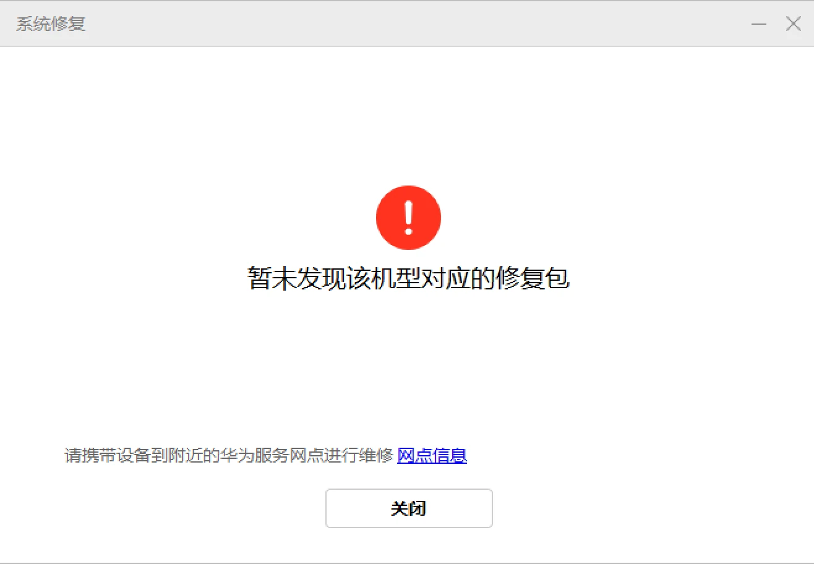不过，说到网点，Hisuite 的安装界面就有一行小字：安装网点版本。
虽然说看着感觉也许是一个高级操作，然而其实：
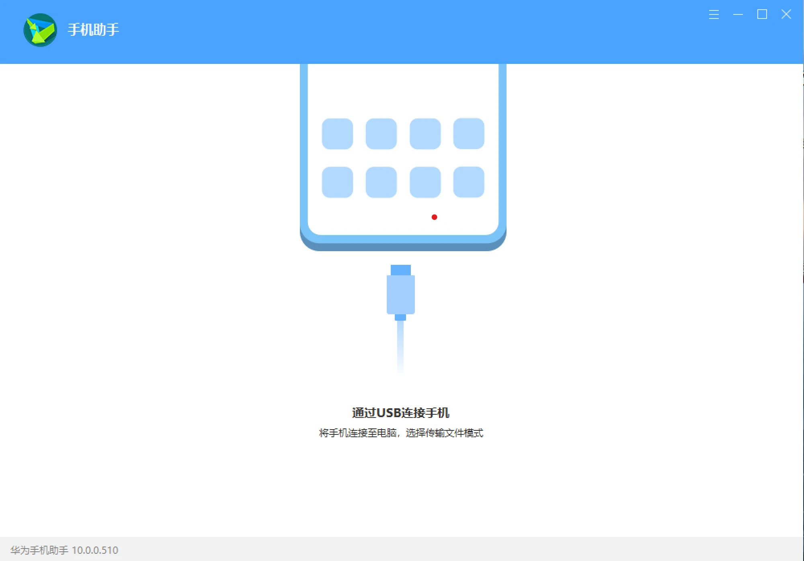华为，你耍我！
现在可没什么法子了，先解锁手机吧，再次用之前获得的解锁码解锁之后，更大的问题出现了。手机不仅无法进入系统，无法进入 TWRP ，甚至无法进入 FASTBOOT 。这下真的是…麻烦了，喜提黑砖。